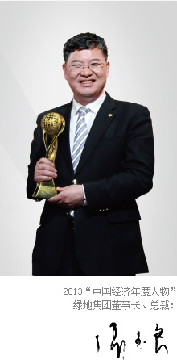

绿地集团（上海）
“营造美好生活”绿地集团创立于1992年7月18日，至今20余年来，始终坚持“绿地，让生活更美好”的企业宗旨，做政府所想、为市场所需，通过产业经营与资本经营并举发展，已形成目前“房地产主业突出，能源、金融等相关产业并举发展”的产业布局，在2014《财富》世界企业500强中位列第268 位，在上榜的中国内地企业中位列第40位。2013年实现业务经营收入超过3283亿元，较上年增长33%，利税总额超280亿元，年末总资产3533亿元。其中，房地产业务实现预销售面积1660万平方米、预销售金额1625亿元，分别排名全国行业第一、第二位。2014年经营收入目标超过4000亿元，其中，房地产预销售金额有望超过2400亿元。
绿地集团房地产主业开发规模、产品类型、品质品牌均处于全国领先地位，特别在超高层、大型城市综合体、高铁站商务区及产业园开发领域遥遥领先，目前建成和在建超高层城市地标建筑23幢，其中4幢高度位列世界排名前十，房地产开发项目遍及全国29个省市自治区80余个城市，在建施工面积6500万平方米。绿地集团紧跟经济全球化趋势，稳健、全速推进海外拓展步伐，目前已成功进入美国、澳大利亚、加拿大、英国、德国、韩国等四大洲九国十二城，力争成为中国房地产行业的全球化经营领跑者。
在确保房地产行业领先地位的同时，绿地集团积极发展能源、金融等次支柱产业。其中，能源产业已形成涵盖煤炭生产、加工、储运、分销及石油仓储、运输、销售等在内的完整产业链，在内蒙古、山西拥有多座煤矿，资源总储量近7 亿吨，年产量超过1350万吨，配送超5500万吨；同时，绿地集团积极打造金融全产业链，与贵州、江西、广西开展全面金融合作，在上海、宁波、重庆、南昌、青岛等中心城市设立一批小额贷款公司，并入股上海农村商业银行、锦州银行、东方证券等多家金融机构。此外，商业运营与酒店产业已成为推动绿地主业发展的强力引擎，商业地产总规模已突破2000万平方米，持有型购物中心面积达300万平方米，项目规模、功能定位和商业品质均处于全国领先地位；酒店产业实施自有酒店品牌管理和对外委托管理相结合的双轮驱动模式，目前建成及在建高星级酒店70余家，资产规模超300亿元。
在资本运作方面，绿地集团成功控股香港联交所上市公司——“绿地香港控股（00337）”，实现全球资源整合的战略新布局；进一步增强混合所有制企业的活力与竞争力；加快整体上市步伐，推动企业更加市场化、公众化、国际化。
绿地集团发展不忘回报社会：出资 2亿元设立 “绿地慈善公益基金”；发布“绿地心计划”专属慈善品牌，长效化、全方位地履行企业社会责任……至今，绿地集团已累计赞助、捐赠近10亿元，先后获得了全国文明单位、全国五一劳动奖状、中华慈善奖、中国驰名商标等荣誉称号。
到2015年，绿地集团目标成为一家国内一流、国际知名、实力雄厚、管理科学，跨国界、跨行业经营，具有世界级规模、运营管理水平、品牌影响力和可持续发展力的大型企业集团，力争实现年经营收入5000亿元，跻身世界企业200强，真正从“中国的绿地”转变为“世界的绿地”。
